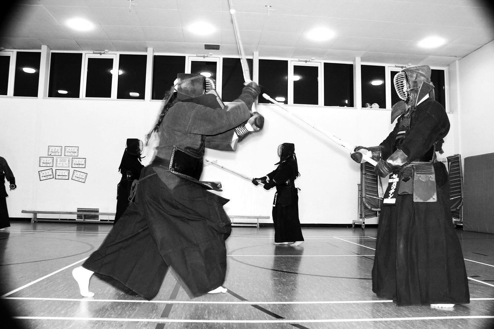
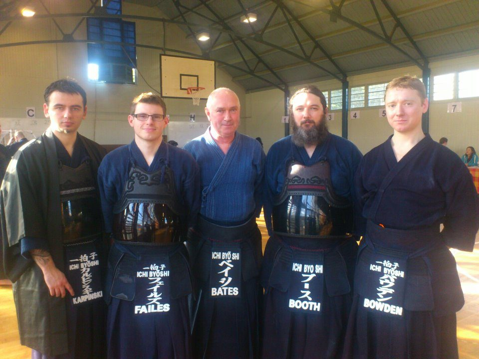

一拍子 · KENDO IN AYLESBURY SINCE 2006
In One Breath
One cut. Everything. Nothing.
A friendly, traditional kendo club for adults and juniors, training in the sports hall at Aylesbury High School. Beginners are always welcome.

Seniors only
Thursday
19:30 – 21:30
Beginners and experienced kendoka
All ages, 8 and up
Saturday
10:00 – 12:00
Adults and juniors train together

What is Kendo?
Kendo (剣道), “the way of the sword”, is the Japanese martial art of sword-fighting. It grew from the traditional techniques of kenjutsu and is now practised around the world as both a martial art and a sport.
Training is physically and mentally demanding, noisy and a great deal of fun.
More about kendo →Who we are
The club was founded in 2006 and has offered training at all levels ever since. Senior instructor John Bates has been practising since 2003 and won gold in the national kata competition.
We welcome all ages and abilities, and our members range from first-timers to 6th Dan.
Meet the instructors → Watch: meet the club (5 min)Sensei John Bates, Chris Bowden and members on what kendo is and why they train. Video on YouTube, opens in a new tab.
How we train
Ichi ByōShi trains to the highest standard, drawing on coaching from leading Kendo instructors in the UK and Japan. Senior BKA instructors visit the club, and we travel together to seminars led by senior Japanese teachers.
We focus on developing our members both as kendoka and as people. Respect and discipline are central to our training, but so is enjoying it. Every student learns all aspects of Kendo, and those who want to compete are supported to do so.
Want to try Kendo?
Your first session is free, and you don’t need any kit. Wear loose sports clothes and bring a water bottle.